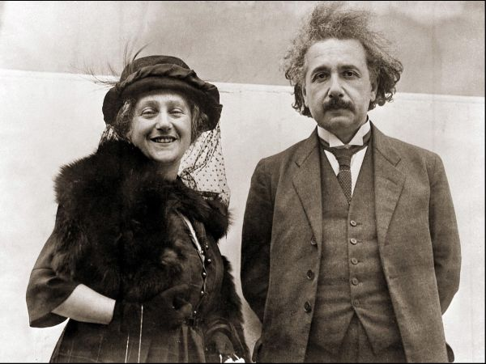

Садржај:
Специјална теорија релативности
1907. године, Ајнштајн је поднео молбу за звање приват – доцента (овај положај би му омогућио да држи предавања). Први пут су га одбили, да би касније уз своју молбу приложио копију дисертације, седамнаест публикованих радова и аутобиографију. 28. фебруара добија извештај да је његова молба прихваћена. Наставничку каријеру започео је у летњем семестру 1908. године када је предавао кинетичку теорију топлоте.
По препоруци Алфреда Кланера, Ајнштајн напушта службу у бироу и 1909. године Циришки универзитет му додељује степен почасног доктора. У периоду на овом универзитету, од 1909. до 1911. године, публиковао је једанаест научних радова из теоретске физике.
Затим, заједно са породицом сели се у Праг. Током свог боравка овде, он ради и пише посебно о принципу еквивалентности сила гравитационе енергије, проблему преламања, девијацији црвене светлости и искривљењу светлосних зракова. Према изворима и писмима које је Алберт слао пријатељима, зна се да је био задовољан својим положајем на Прашком универзитету, али да је био усамљен, говорио је да су тамо људи другачији, отуђени, није имао ни са ким да прича о својимм правим интересовањима, а ни његова породица није била превише задовољна животом у Прагу. Због тога, након шеснаест месеци боравка, они се враћају у Цирих. У то време сарађује са математичарем Марселом Гросманом који га упознаје са Римановом геометријом.
1914. године породица се сели у Берлин, где се не задржавају дуго сви заједно. Алберт и Милева се растају и она се заједно са децом враћа у Цирих. Алберта је ова ситуација погодила иако им брак није био срећан. Ипак, након њиховог одласка остао је сам у сузама.
Након неког времена иако сам, он наводи да му се живот у Берлину веома свиђа и да је испуњен. 26. априла он објављује свој први новински чланак „О принципу релативности.“
Иако су око њега била ратна дешавања, то га није спречавало у постизању успеха. У том периоду, он је завршио формирање ОТР, нашао реалније значење и доказе о преламању, девијацији, увео је коефицијенте А и Б за радиационе прелазе, дао је нови закључак закона радијације Планка,…
У то време, публиковао је око 50 научних радова у једну књигу.
Алберт открива да има чир на желуцу, а касније и жутицу. Бригу о њему преузима Елза Ајнштајн, даљња рођака, са којом касније ступа у брак.
Елза и Алберт